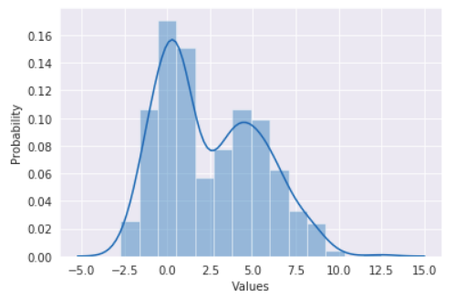
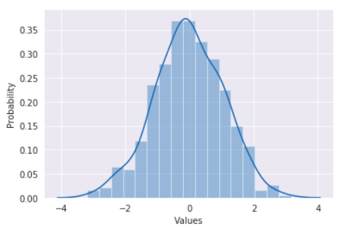
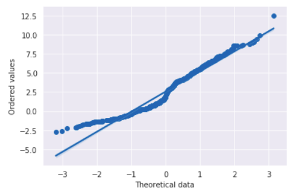
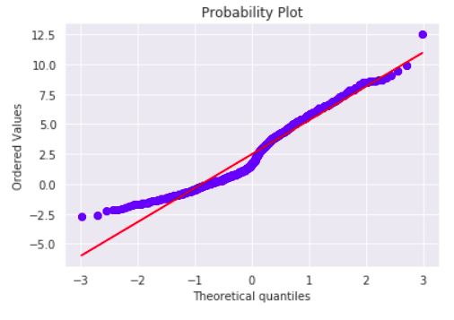

Data distribution testing is the first stage of exploratory data analysis. Often, we need to know if the data is normally distributed, since a large number of statistical methods are based on the assumption that it is.
There are 2 ways to test for data distribution: graphical and numerical.
Numerical methods are mostly about hypothesis testing. Graphical methods involve graphs studying: histogram, quantile-quantile plot and others. Let’s build the quantile-quantile plot to test for the data normality.
Quantile-quantile plot
Quantile-quantile plot (Q-Q plot) is built by two datasets: theoretical against empirical data. The Q-Q plot helps to assess how close the estimating values to the theoretical distribution. If the points are close to the straight line, the dataset is approximately distributed as the theoretical. Also, the plot can show skewness, kurtosis and outliers of the dataset.
Normal probability plot
The normal probability plot is a special case of the Q-Q plot for identifying the normality of the data.
Let’s assume, we have some data. As an example, I generated bimodal distribution merging two samples of the normal distribution with different parameters.

For the theoretical data, I took a normal sample of the same size.

After ordering the values we can draw the Q-Q plot (or a normal probability plot in this case). A regression line helps to see empirical data deviations from the normal distribution.

The line, formed by the points, is slightly bent in two places. These curves denote two peaks in the data. The deviation on the left is caused by a steep shoulder and the data points are skewed right. Also, we can see a lonely dot on the right. It is an outlier.
Quantiles
The plot is called quantile-quantile, which means that we use quantiles. Previously, we constructed the plot using the row data points, just ordered. So, in that case, the ordered values played the role of the quantiles of the samples. Generally, the quantiles choice depends on the purpose and on the distribution in question. There are different ways to calculate the quantiles.
For example, stats from SciPy package calculates theoretical quantiles using Filliben's estimate.

The plot is almost the same for our data. The dots form a smoother line, it’s probably caused by random character of theoretical data generation. Overall, the result the same: the data differ from a theoretical normal distribution.
Conclusion
The Q-Q plot is a simple graphical way to determine data deviations from the theoretical distribution and can be an visual addition to analytical approaches. For more precise decision there are different numerical methods.